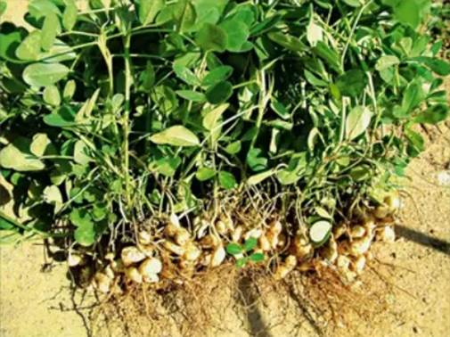
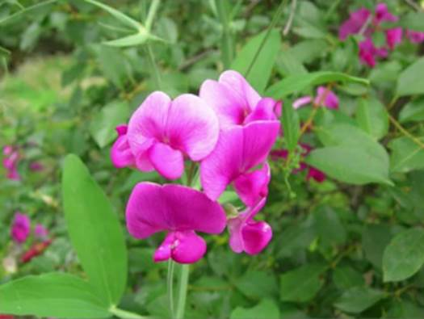

Введение
На этом уроке продолжаем знакомство с цветковыми растениями, узнаем о семействах цветковых растений и их представителях. Выделим культурные и дикорастущие растения семейства, обсудим цветки, соцветия, плоды и видоизменения вегетативных органов.
Представители бобовых
Культурными представителями семейства бобовых является горох (рис. 1), фасоль (рис. 2), чечевица (рис. 3), соя (рис. 4), арахис (рис. 5). Из декоративных растений самыми известными являются люпин (рис. 6), глициния (рис. 7).
Рис. 1. Горох
Рис. 2. Фасоль
Рис. 3. Чечевица
Рис. 4. Соя

Рис. 5. Арахис
Рис. 6. Люпин
Рис. 7. Глициния
Дикорастущими представителями семейства бобовых, из трав, являются клевер (рис. 8), люцерна (рис. 9). Они растут без участия человека, являются кормовыми культурами. Их часто сеют на полях, для организации на них пастбищ для скота.
Рис. 8. Клевер
Рис. 9. Люцерна
Дикорастущие представители, которые не имеют ценности в сельском хозяйстве и растут на лугах: чина (рис. 10), лядвенец(рис. 11), донник (рис. 12).

Рис. 10. Чина
Рис. 11. Лядвенец
Рис. 12. Донник
Верблюжья колючка (рис. 13) тоже относится к дикорастущим бобовым, а также кустарник карагана, или желтая акация (рис. 14), дерево робиния обыкновенная, ее у нас часто называют белая акация (рис. 15).
Рис. 13. Верблюжья колючка
Рис. 14. Карагана
Рис. 15. Робиния
Цветки бобовых
Бобовые растения – это семейство из класса двудольные растения, околоцветник в цветке двойной. На цветке фасоли видно (рис. 16) чашечку и венчик. Чашечка у цветков бобовых пятичленная (состоит из пяти чашелистиков),

Рис. 16. Цветок фасоли
Лепестки венчика не простые, имеют разную форму, верхний лепесток самый крупный называется парус, лепестки справа и слева называются весла, два нижних лепестка сращены и имеют название лодочка (рис. 17).
Рис. 17. Расположение и название лепестков венчика бобовых
Не всем биологам кажется, что строение цветка похоже на кораблик, поэтому существует еще одно название цветка бобовых растений – цветок мотылькового типа. И само семейство бобовых приобретает еще одно название мотыльковые.
В цветке бобовых десять тычинок, девять из которых срастаются между собой, а десятая находится напротив паруса отдельно, и один пестик (рис. 18).
Рис. 18. Расположение тычинок и пестика в цветке
Завязь пестика является одной полостью, из нее возникает плод бобовых – боб (рис. 19). Часто ошибочно называют плод бобовых стручком, но стручок – это плод семейства крестоцветных и внутри разделен на две камеры (рис. 20).
Рис. 19. Боб
Рис. 20. Сравнение вида стручка и боба
Соцветие у бобовых бывает нескольких видов, в виде кисти у люпина и донника (рис. 21), в виде головки у клевера и люцерны (рис. 22).
Рис.21 Соцветие в виде кисти у люпина
Рис. 22. Соцветие в виде головки у клевера
Видоизменение вегетативных органов семейства бобовых
На примере гороха рассмотрим одно из видоизменений. Горох относится к травянистым лианам, у него вьющийся,цепляющийся, не очень прочный стебель. Для роста вверх необходима опора, в качестве опоры выступают прямостоящие стебли травы, деревья, стена постройки, забор и т. д. У лиан семейства бобовых для закрепления на опоре есть листовой усик, он является продолжением листа (рис. 23), который оплетает опору или цепляется за неровности. Листья у бобовых бывают сложные (смотри урок «Внешнее строение листаУ клевера листья тройчатые, у сои, фасоли, гороха, желтой и белой акации – перистые, у люпина – пальчатые.
Рис. 23. Листовой усик фасоли
Еще одним видоизменением у бобовых являются корневые клубеньки (рис. 24). В этих клубеньках находятся азотфиксирующие бактерии – ризобии, которые способствуют росту и питанию растений.
Рис. 24. Корневые клубеньки на корнях лядвенца
Заключение
На уроке мы рассмотрели семейство бобовых, его представителей. Выяснили особенности строения цветка, плода и узнали о метаморфозах и видоизменениях.
Список литературы
1. Биология. Бактерии, грибы, растения. 6 кл.: учеб. для общеобразоват. учреждений / В.В. Пасечник. – 14-е изд., стереотип. – М.: Дрофа, 2011. – 304 с.: ил.
2. Тихонова Е.Т., Романова Н.И. Биология 6. – М.: Русское слово.
3. Исаева Т.А., Романова Н.И. Биология 6. – М.: Русское слово.
Дополнительные рекомендованные ссылки на ресурсы сети Интернет
1. Интернет портал «Доступная биология» (Источник)
2. Интернет портал «Фестиваль педагогических идей» (Источник)
3. Интернет портал «Биология» (Источник)
Домашнее задание
1.В чем хозяйственная ценность пищевых и кормовых бобовых растений?
2. По каким признакам виды бобовых объединяют в одно семейство?
3. Перечислите, какие представители бобовых есть у вас на кухне. Какие вы видели растущими на улице, в парках, садах, огородах?